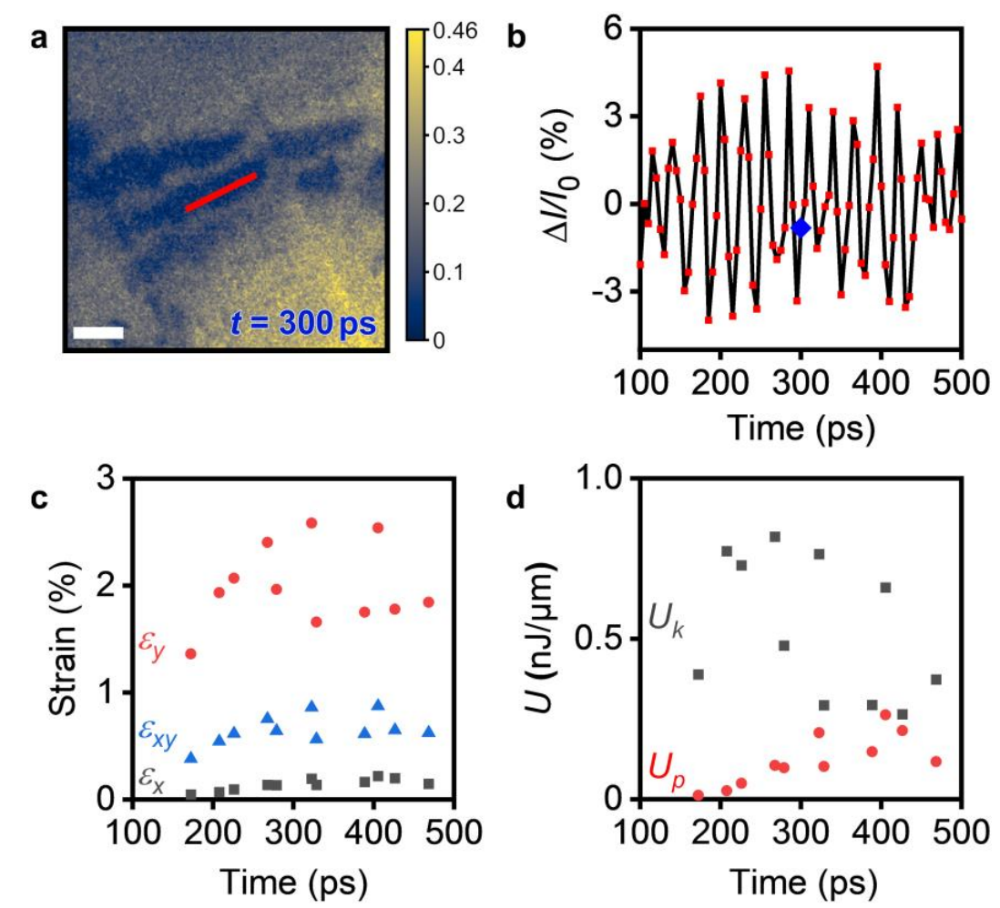
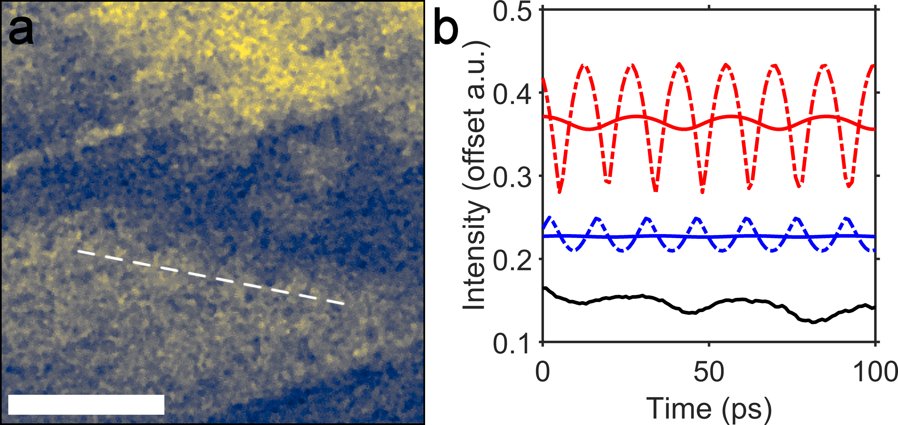

Quantifying Transient Strain and Energy of Coherent Acoustic Phonons with UEM Imaging

Visualization of Photoexcited Hypersonic Acoustic Phonons with Ultrafast Electron Microscopy
Materials Research Society 2019 QN04.04.04

Exploring the Connection between Coherent Acoustic Phonons and Bright-Field Contrast in Ultrafast Electron Microscopy

Picosecond phase-velocity dispersion of hypersonic phonons imaged with ultrafast electron microscopy